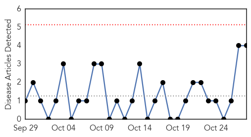

Pertussis
30-Day Web Trend
0 alerts, 0 warnings

30-Day Twitter Trend
0 alerts, 0 warnings

Article Locations

Article Confidences

Top Articles:
Top Tweets:
-
No tweets found for Oct 28, 2014
Dengue Fever
30-Day Web Trend
1 alerts, 0 warnings

30-Day Twitter Trend
2 alerts, 0 warnings

Article Locations
Article Confidences

Top Articles:
- 0.993
- Hong Kong must be on guard against threat of dengue fever
- 0.989
- Taiwan Raises the Alarm Level in Dengue Fever Outbreak
- 0.989
- Taiwan raises the alarm level in dengue fever outbreak
- 0.966
- Adviser to CM on health visits Rawalpindi to assess measures
- 0.897
- With dengue wreaking havoc, NMC initiates various measures to curb spread of disease
- 0.881
- Cong blames AAP, BJP for monsoon woes
- 0.842
- Dengue cases on the rise, quality of PMC insecticides under scanner
Top Tweets:
- 0.565
- Flavivirus news: Delhi Dengue update: Two die of dengue, number of cases rises to 340 in Delhi ... http://t.co/TSm6hm3bGZ pathogenposse